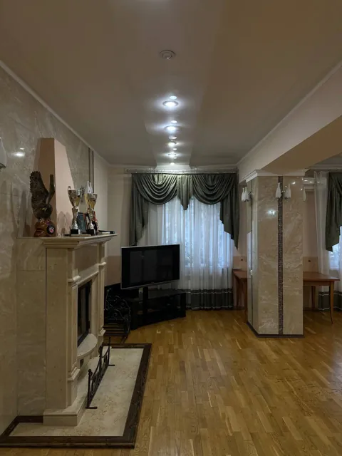
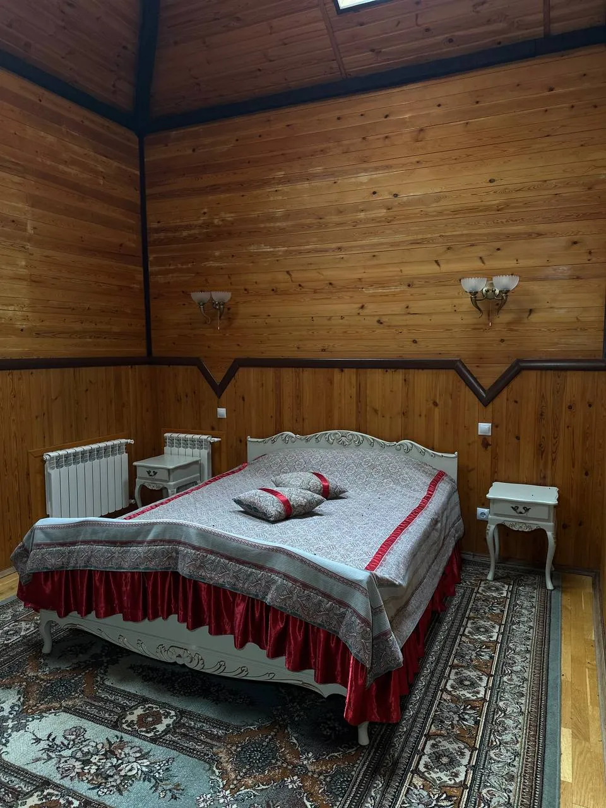
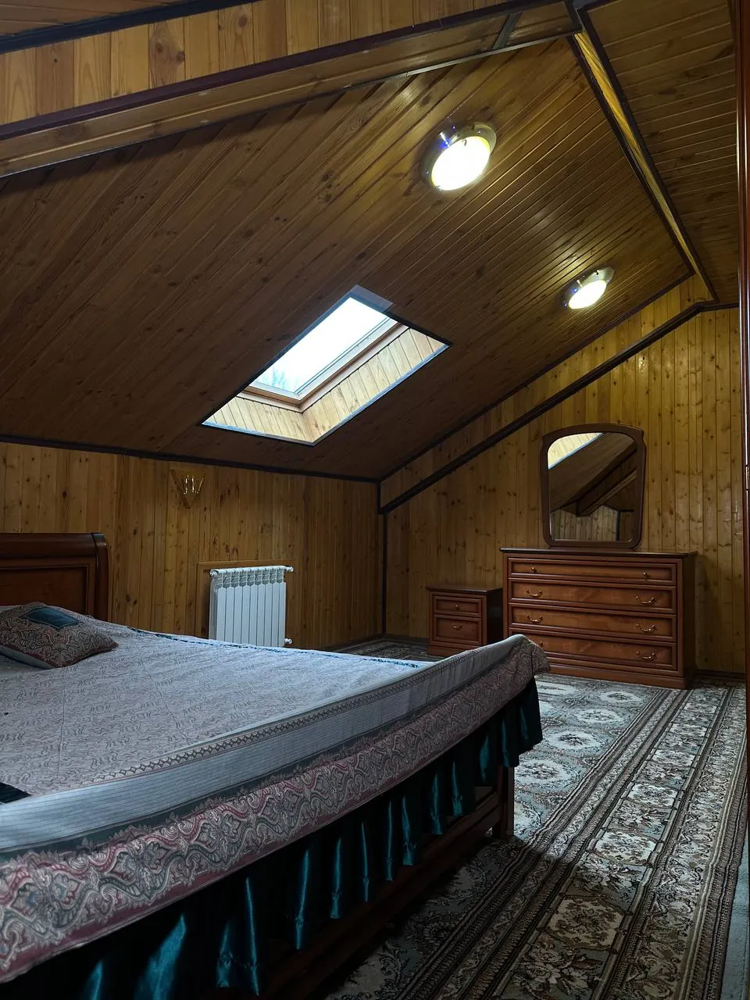
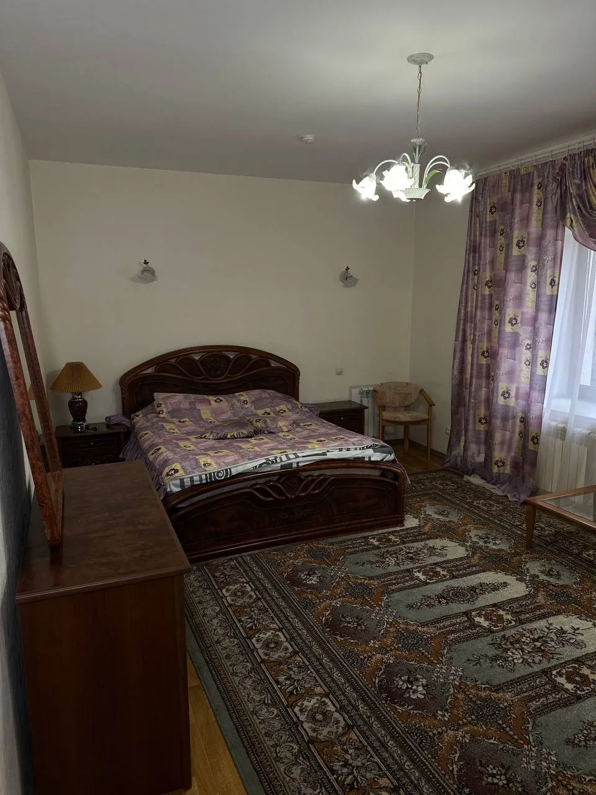
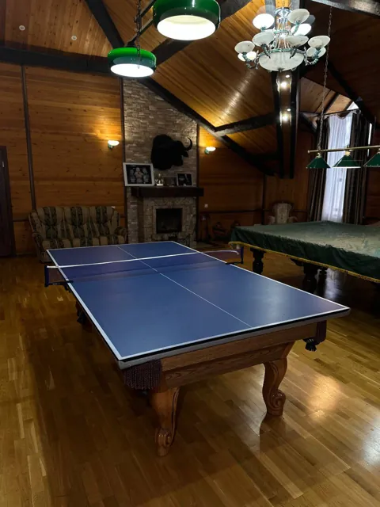
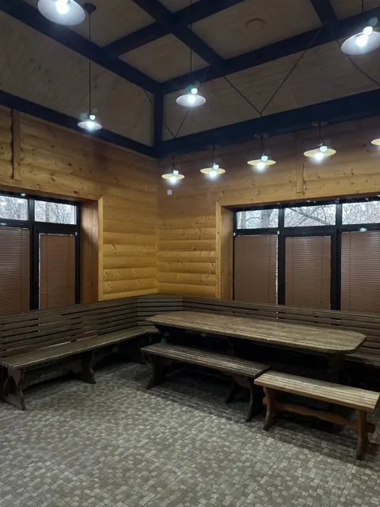
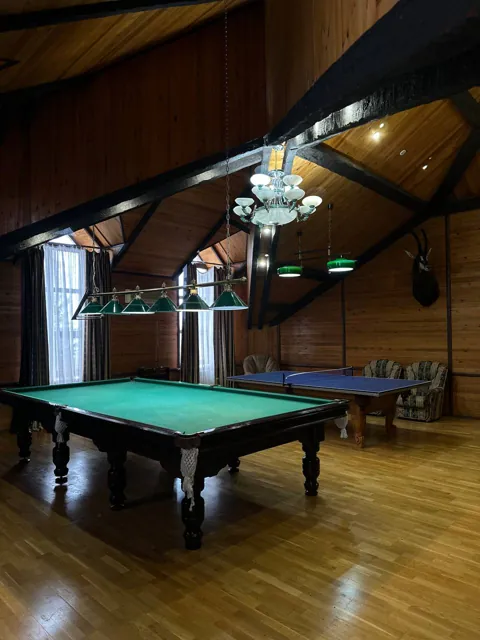
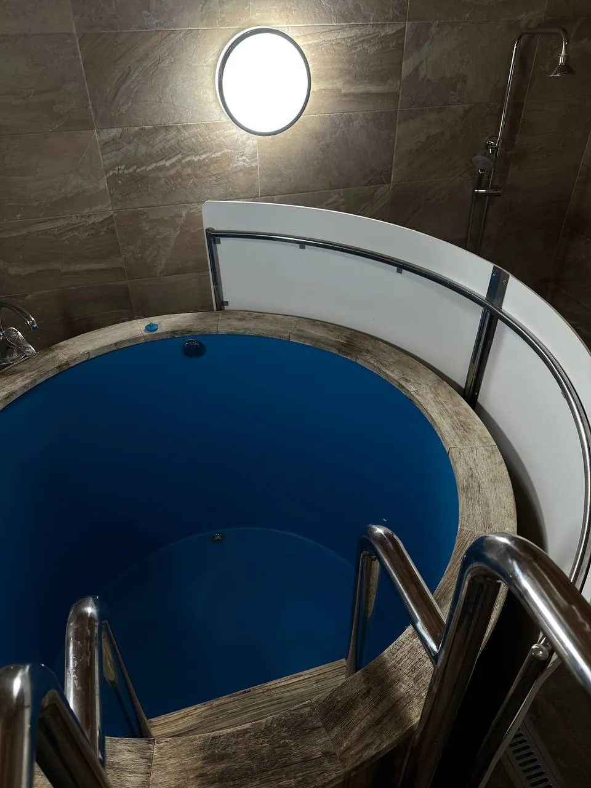

Об усадьбе
За городом.
В кругу родных
Собраться за большим столом, поговорить у камина, выйти к воде. И никуда не спешить.
«Сосновый бор» — загородная усадьба в селе Тукаево Туймазинского района. Просторный дом и места для отдыха на воздухе — для встреч с семьёй, друзьями и большой компанией.
Количество спальных мест и условия размещения уточняются при обращении.


Внутри — тепло домашнего уюта
Пять спален
Сбежать от суеты и выспаться
Когда встречу не хочется заканчивать одним вечером.
В доме пять спален. На фотографиях — комнаты с деревянной отделкой, мансардная спальня и светлая комната с двуспальной кроватью.
Вместимость усадьбы — до 50 человек. Это не количество спальных мест: размещение на ночь необходимо уточнить отдельно.




Место для встреч
Собраться
всей компанией.
В усадьбе два банкетных зала. Большие столы помогают провести время вместе — за семейным ужином или встречей с друзьями.
Каминный зал — ещё одно место для разговоров и спокойного отдыха. Внутри — тепло домашнего уюта
Вместимость залов, формат встречи и условия использования помещений уточняются при обращении.
Внутри дома
У каждого отдыха
свой сценарий.
Большой ужин, вечер у камина, партия в бильярд или время в парной. Всё в одном месте.
Остаться с ночёвкой
5 спален · Wi-Fi
Собраться вместе
2 банкетных зала · Каминный зал
Согреться и отдохнуть
Баня · Сауна · Купель
Сыграть ещё партию
Бильярд · Настольный теннис




Баня, сауна и купель
Время
для себя.
В доме предусмотрены баня, сауна и купель. Комната отдыха позволяет сделать паузу и провести вечер без спешки.
Для активного досуга есть бильярд и настольный теннис, для связи — Wi-Fi. Можно выбрать занятие по настроению и чередовать его с отдыхом на воздухе.
Режим работы и условия использования банной зоны и других удобств необходимо уточнить при планировании приезда.
Фотографии банной зоны